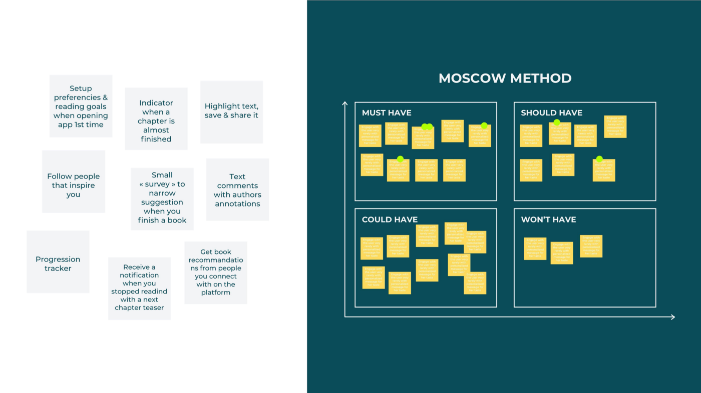

UX/UI case study of a Reading App
May 5th, 2020 - 8 min read
Goal & Context
Do you sometimes say that you would like to read more books, but you actually don’t manage to do it? That’s personally my case, and for this one-week project, my team mate and I, both UX designers, developed a concept of an app that would encourage people to read more books, more often.
The brief was to design a Minimum Viable Product of a mobile app, to help people improve their wellbeing. The App had to have a tracking feature. To narrow our focus, we decided to tackle the problem from the mental wellness perspective. As this was not a commercial project, we made that decision based on our personal taste, and because we thought the market for physical wellbeing app was already well tackled.
A bit of challenge was added to the project, as we worked remotely because of the confinement context we were in. This was a great way for me to learn how to coordinate work and use collaborative tools remotely.
Scientific Researches
We dug the subject of mental wellness, by reading scientific studies and reports. One area was often discussed: the fact of setting goals and achieving them, which can be resumed like that:
“Goals help improve our health and wellbeing, foster positive relationships with friends, family or colleagues and help us feel that we are in control, and that we are getting the most out of life”
Caroline Crotty Psychotherapist
Collecting Datas
Survey
Now that we had some scientific foundations for the project, we wanted to go deeper in the subject of “achieving goals”. So we decided to create a survey to measure how important it was for people to define, write and achieve goals in their everyday lives.
50 participants took the survey. The results showcased that 92% of the participants thought having goals was important for them, and when they don’t achieve them it is for 50% because of lack of motivation and organization.
But what was the most interesting for us was the answer we got at the question: “If you were to set a new goal, what would you mostly set it for?” Out of 18 topics, “reading more” arrived at the third place. We didn’t think reading more was so important in people’s life, and because we personally had the same problem, we decided to narrow the project down to: reading more, by setting goals.
Market Analysis
The type of app we wanted to work on was defined, so we decided to know more about the market doing a market analysis and a benchmarking of the reading apps.
In 2018, 2.92% of the App market was dedicated to reading applications. However we found out the majority of the applications for reading were mostly for improving reading skills like speed and concentration, but there were none actually encouraged or motivated the user to read more and get in the habit of reading on daily basis.
Needs and Frustrations
Job-To-Be-Done Interviews
With all these informations, we wanted to get qualitative datas, so we conducted Jobs-to-be-done Interviews. We chose this type of interview because its goal is to uncover the real reason why people use a product, and we wanted to understand what is the “job” people hire a book for. It would help us motivate them to read more.
So we conducted JTBD interviews with 4 people. Here are the main takeouts:
Defining the Persona
We had good insights and a clear understanding of users thanks to our survey and JTBD interviews. So we created a persona to embody the core motivations and frustrations of our interviewees, into one believable fictive person.
Framing the Problem
We had then enough datas to frame our problem like this:
“Sophie, a social accountant and commuter needs to be encouraged to read more, and to be guided to choose the right book because she doesn’t have the reflex of picking a book, even though she wants to be motivated by the stories of inspiring people.
Creating a Minimum Viable Product
Creating features
It was then time to imagine features for our app. For that we used ideation techniques like “Good and Bad Idea” or “Crazy 8”. We ended-up with dozens of feature ideas.
Prioritizing features
For our MVP, we needed to select the best ideas and prioritize them, so that only the “vitals” ones would feature the first version of the prototype. For that we used prioritization tools like the “Moscow Method”, or “Buying a feature”.

Transcription of “Moscow Method” & “Buying a feature”
sessions we ran remotely with users on Mural
We did a session of each as a team, and then we conducted two sessions with two users each. At the end we could compare what we, as a team, prioritized, and what user did. It was a good source of learning. For example the feature “Highlight a part of the text and save/share it” was considered “vital” by users, when we originally assumed it was not.
Features Selected
We ended-up with 9 vital features, that we split in 4 categories. We titled each category with expressive titles:
- Set-up goals & reading preferences
- Progression tracker
- Survey when a book is finished to narrow down suggestions
- Receive a notification when stop reading for a few days, with a teaser of the next chapter
- Indicator when you are close to the end of the book
- Get book recommendations from your friends
- Follow people that inspire you
- Comments from authors in the book
- Highlight a text extract and save or share it
Reading Progress:
Reading Encouragement:
Book-club Feature:
Augmented Book: